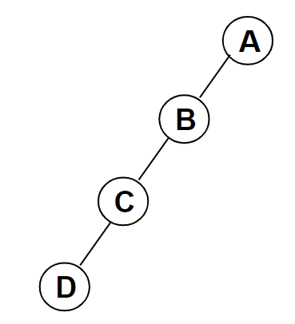
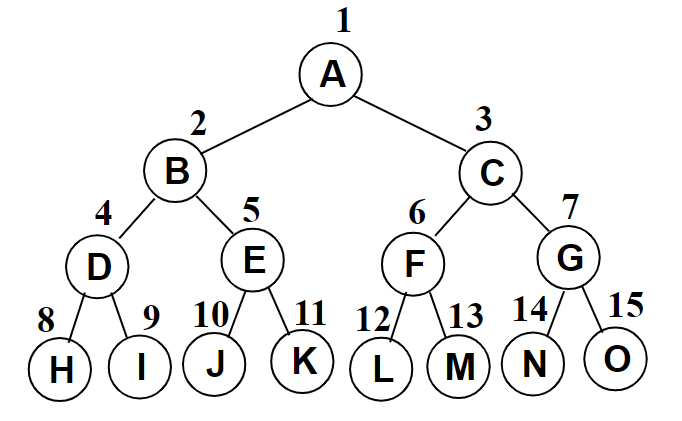

树（上）
树的定义
树（Tree）是由 $n(n\ge0)$ 个节点构成的有限集合。
当 $n=0$ 时，称为空树。
对于任何一棵非空树，具备以下性质：
-
有根节点。
-
其余节点可以分为互不相交的有限集（即子树不相交），其中每个集合本身又是一棵树，称为原来树的子树。
树是把一个图中所有节点连接起来所需边数最少的数据结构，一棵 $n$ 个节点的树有 $n-1$ 条边。。
除了根节点以外，每个节点有且仅有一个父节点。
基本术语
- 节点的度（degree）：节点的子树个数。
- 树的度：树的节点中最大的度数。
- 叶节点：度为 0 的节点。
- 路径和路径长度：从节点 $n_1$ 到 $n_k$ 的路径为一个节点序列 $n_1,n_2,…,n_k$，$n_i$ 是 $n_{i+1}$ 的父节点，路径所包含边的个数为路径的长度。
- 节点的层次（level）：规定根节点在1层，其他节点的层数是父节点的层数 + 1。
- 树的深度（depth）：树中所有节点的最大层次。
- 父节点（parent）、子节点（child）、兄弟节点（sibling）、祖先节点（ancestor）、子孙节点（descendant）。
树的表示
一般的树，难以用数组表示，而如果使用链表表示，不能使用父亲-儿子表示法，因为每个节点的子节点个数不一定，导致每个节点的结构不同，带来困难，应该使用兄弟-儿子表示法，如下：
class TreeNode {
ElementType element;
TreeNode* firstChild;
TreeNode* nextSibling;
};此时每个节点固定只有三个域，一个数据域和两个指针域，这样表示的树也称为二叉树。
二叉树
定义
二叉树是一个有穷的节点集合，这个集合可以为空。
如果不为空，则它是由根节点和称为其左子树和右子树的两个不相交的二叉树组成。
二叉树的子树有左右顺序之分。
特殊二叉树
斜二叉树（Skewed Binary Tree）
每个节点都只有一棵子树，这样的二叉树实际上是一个单向链表，是线性结构。

完美二叉树
完美二叉树（Perfect Binary Tree），又称为满二叉树（Full Binary Tree），每个节点都有左右子树。

完全二叉树（Complete Binary Tree）
有 $n$ 个节点的二叉树，对树中节点按从上至下，从左到右顺序进行编号，编号为 $i(1\le i\le n)$ 的节点与满二叉树中编号为 $i$ 的节点在二叉树中位置相同。
二叉树几个重要性质
- 一棵二叉树第 $i$ 层的最大节点数为 $2^{i-1},i\ge 1$
- 深度为 $k$ 的二叉树有最大节点总数为 $2^k-1,k\ge 1$
- 对任何非空二叉树，若 $n_0$ 表示叶节点的个数、$n_2$ 是度为 $2$ 的节点个数，那么两者满足关系 $n_0=n_2+1$
二叉树的抽象数据类型定义
类型名称：二叉树（Binary Tree）
数据对象集：一个有穷的节点集合。若不为空，则由根节点和其左右二叉子树组成。
操作集：
bool isEmpty()//判别树是否为空
void preOrderTraversal()//前序遍历
void inOrderTraversal()//中序遍历
void postOrderTraversal()//后序遍历
void levelOrderTraversal()//层序遍历二叉树的存储结构
数组存储
只适合表示完全二叉树，按从上至下、从左到右顺序存储 $n$ 个节点。
当根节点的编号为$1$，有：
- 非根节点（序号$i> 1$）的父节点的序号是 $[i/2]$
- 任意节点（序号$i\ge 1$）的左右子节点的序号分别为 $2i$ 和 $2i+1$（当且仅当 $2i\le n$ 才有左孩子，$2i+1\le n$ 才有右孩子。
链表存储
template <typename ElementType>
class TreeNode {
ElementType data;
TreeNode* left;
TreeNode* right;
};二叉树的遍历
前、中、后序遍历
前、中、后三种遍历对树的访问路径完全相同，不同点在于访问根节点的顺序，先序遍历过程为：
- 访问根节点
- 先序遍历左子树
- 先序遍历右子树
另外两种遍历同理。
由遍历的描述知，可以采用递归的写法来进行遍历，对于非递归算法：应该使用循环+栈的方式，例如，中序遍历的非递归算法为：
- 遇到一个节点，就把它压栈，并遍历它的左子树
- 左子树遍历结束后，从栈顶将该节点弹出，并访问
- 遍历该节点的右子树
层序遍历
如果把树看作一张特殊的图，层序遍历的过程，其实就是从根节点开始，向外进行广度优先搜索（BFS）的过程，只要使用队列即可，具体算法如下：
- 根节点入队
- 当队列不空，从队列中取出一个元素并访问，同时将其左右孩子入队
代码（以数据类型 int 为例，同时由于队列不是重点，这里直接使用 std::queue）：
#include <iostream>
#include <queue>
using namespace std;
class TreeNode {
public:
int data;
TreeNode* left;
TreeNode* right;
TreeNode(int data = 0)
: data(data) {
left = right = nullptr;
}
};
class BinTree {
public:
TreeNode* root;
BinTree() {
root = nullptr;
}
BinTree(TreeNode* root)
: root(root) {}
~BinTree() {
queue<TreeNode*> q;
q.push(root);
TreeNode* ptr;
while (!q.empty()) {
ptr = q.front();
q.pop();
if (ptr->left)
q.push(ptr->left);
if (ptr->right)
q.push(ptr->right);
delete ptr;
}
}
void preOrderTraversal(TreeNode* node) {
if (node == nullptr) {
return;
}
cout << node->data;
preOrderTraversal(node->left);
preOrderTraversal(node->right);
}
void inOrderTraversal(TreeNode* node) {
if (node == nullptr) {
return;
}
inOrderTraversal(node->left);
cout << node->data;
inOrderTraversal(node->right);
}
void postOrderTraversal(TreeNode* node) {
if (node == nullptr) {
return;
}
postOrderTraversal(node->left);
postOrderTraversal(node->right);
cout << node->data;
}
void levelOrderTraversal() {
if (root == nullptr) {
return;
}
queue<TreeNode*> q;
q.push(root);
TreeNode* ptr;
while (!q.empty()) {
ptr = q.front();
q.pop();
if (ptr->left)
q.push(ptr->left);
if (ptr->right)
q.push(ptr->right);
cout << ptr->data;
}
}
};遍历的应用
-
输出二叉树中的叶子节点
只要任取一种遍历顺序，只是在访问时增加对该节点是否为叶子节点（左右子树都为空）的判断即可。
-
求二叉树的高度
可以使用递归的方式，对于空树，高度为 0，对于非空树，高度为 max{左子树高度,右子树高度}+1。
-
由两种遍历确定一颗二叉树：
此时两种遍历里，一定要有中序遍历，否则无法确定一棵唯一的二叉树。
用先序+中序遍历确定二叉树具体算法如下：
根据先序遍历第一个节点确定根节点，在中序遍历中找到该节点，分割出左右两子树，再分别对两子树递归使用相同的方法继续分解。